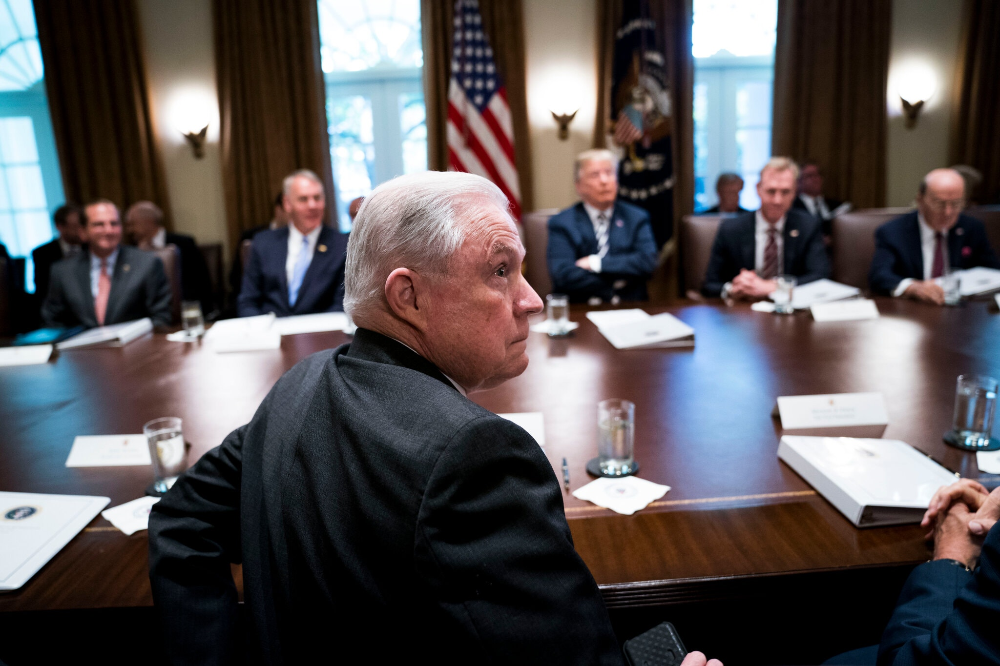

ESTADOS UNIDOS
'We have to separate children': how officials promoted the policy of separating families in the US.
Altos funcionarios del Departamento de Justicia fueron “una fuerza impulsora” detrás de la política
migratoria más controversial del presidente Trump, según un borrador del informe de investigación.

Como fiscal general de Estados Unidos, Jeff Sessions impuso una política migratoria de “tolerancia cero”
que separaba a los niños de sus padres.Credit...Doug Mills/The New York Times